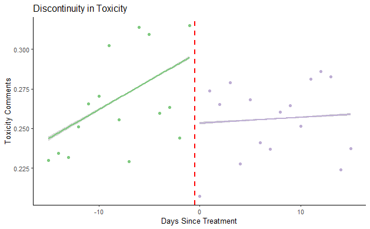

Mitigating Harassment in Online Communities with Human-Bot Moderation: Insights from Reddit Communities
Introduction
The need to converse emerged since the dawn of human civilization. In this Internet age, that need for face-to-face conversation has evolved into the need for online conversation, which ranges from decade-old Internet Relay Chat and forums to today’s newsgroup and social networks. Not all conversations are civilized conversations. In online settings, because of online anonymity, people may engage in even more harmful activities (Duggan 2021b), such as harassment and cyberbullying. Harassment does not only negatively affects individuals who participate in online communities but also harms said communities as a whole.
In a recent survey by Pew Research (Vogels 2021) , 41% of American states that they have personally experienced some forms of harassment, while 25% of those surveyed stated that they even received threats, stalking, sexual and sustained harassment. Although the consequences of online harassment on individuals are more prominent in the short term, a few people, especially women who experienced it, reported that they suffered negative long-term impact (Duggan 2021a). More than that, harassment also poses great threats for the community as a whole, ranging from the quality erosion of content to exclusion of certain groups of contributors. A prominent example of this is 8chan, a loosely moderated image-board site where users can post images annonymously about anime, popular culture, to politics and sports (Wikipedia n.d.). From its inception in 2013, the site was gradually dominated by a group of users with extreme ideologies, who drove away other genuninely interested contributors along with a variety of other topics. The site then turned into a home for antisemitism, misogyny, and anti-immigration ideologies. It was associated with a series of mass shooting in 2019: the New Zealand mass shooting at two mosques (Regan and Sidhu 2019), El Paso mass shooting at Walmart (Mezzofiore and OŚullivan 2021), and Dayton, Ohio mass shooting (Paul P. Murphy and Levenson 2019). Consequently, the site was shut down by its network infrastructure provider (Cloudfare 2019), web service (Robertson 2019). Such incidents along with other related concerns pressure platforms to mainly focus on addressing harassment.
Most platforms used human moderation as the immediate solution when they first encountered online toxicity. However, moderation by just human ran into several issues for platforms owner. First, as platform expands, governing with just human moderation as traditionally done is costly to scale up, considering how vast platforms have become over the last decades. (Gillespie 2020, 2018). Second, a number of research and reports show that human moderators, no matter paid or volunteer, experience burnout and emotional distress Snyder (2020). Along with that, human moderators cannot be solely relied on in case of emergency. During the Covid-19 pandemic, platforms sent their human moderators home while starting to automate the moderating process Lapowsky (2020). . Last but not least, although human judgement is always used as a standard, it known to have biases, especially towards delicate matter such as political ideology (Gillespie 2018; Diakopoulos and Naaman 2011). Thus, the future of moderation cannot depend on human actions alone.
Preparing themselves for the future of moderation, platform, and community owners shifted from using mainly humans to relying mostly on machines for moderation tasks, reasoning that machine is faster at scale (Gillespie 2020; Gorwa, Binns, and Katzenbach 2020). For example, Wikipedia implemented a wide range of bots to automate tasks on each Wiki page, one of which is the ClueBot NG bot. This bot claims to detect whether an edit is an act of vandalism (Wikipedia 2021a). Facebook also used AI intensively in its online moderation ranging from hate speech to misinformation detection (Schroepfer 2021).
Consistency is also a good virtue that machine brings to moderation tasks. In the case of Covid-19 pandemic, technology companies boasted their innitial results of switching to machine moderation. In a report, Facebook stated its independence of human moderators stating that 95% of the hate speech they have taken down was performed by Artificial Intelligence (Schroepfer 2021) despite several criticisms for dismissing its human moderators (Geigner 2021; Stokel-Walker 2020). Despite its rising popularity in recent years, moderation relying solely on machines ignites a whole new level of concern given the inherently complicated landscape of moderation. First, as with many other tasks being automated, there is a burning question about whether machines can totally replace humans in such delicate matter. In this vein of discussion, Gillespie (2020) argues that although machine-based moderation is inevitable, humans must remain in the loop. The bias could come from the training datasets as proven in Binns et al. (2017). Gorwa, Binns, and Katzenbach (2020) also raised the same concern by arguing that algorithmic moderation could create injustice in large-scale socio-technological systems. Secondly, in a similar vein with Gorwa, Binns, and Katzenbach (2020), Gillespie (2020) concerns about transparency and accountability should there be no human in the loop. Moreover, the platform’s point of view about the trade between free speech and safety, Gorwa, Binns, and Katzenbach (2020) pointed out that purely algorithmic moderation would undermine the political nature of speech. Last but not least, Mark Zuckerberg admitted himself that machine is not sensitive to “nuances” in languages or the intent behind the comment yet, which inevitably can lead to misclassification (Canales).
Past discussions on platforms’ governance suggest that neither relying on solely humans nor machines works effectively for online moderation against harassment. Thus, human-machine moderation is a viable solution for the future of platform governance. More recent discussions, research included, on online moderation shifted their attention to human-machine moderation (Chandrasekharan, Gandhi, Mustelier, & Gilbert, 2019; Jhaver, Birman, Gilbert, & Bruckman, 2019; Kiene & Hill, 2020; Kiene, Jiang, & Hill, 2019). Through-out these studies, Reddit, Discord, and Twitch stand out as the most studied platforms for human-machine moderation. These platforms allow customized moderation at the community level: each community is run by a team of moderators, human and machine included. As a result, this decentralized governance invites a variety of governing modes across different communities. Kiene, Jiang, and Hill (2019) and Kiene and Hill (2020) studied the successful use of bot moderators when human moderators faced an exploded amount of content on Discord and Reddit. Seering et al. (2018) discovered that the moderation bot also played a social role in facilitating discussion on Twitch. Not only does the literature explore the overall effect of human-bot moderation, but it also dives into specific bots’ effects. Chandrasekharan et al. (2019) claimed to study the first “open source, AI-backed socio-technological moderation systems” - the Crossmod. Although the study confirmed the bot’s superior performance judging from human moderators’ positive feedback, in reality, it is not used as much as other bots on Reddit. As of July 2022, the bot seems to cease operation, judging from the two communities it is monitoring. The mixed results of human-machine’s moderation in research could be due to the fact that not all human-bot moderation is executed the exact same way.
Generally, there are two mechanisms on which these moderation machines are built on. Consequently, there are two ways in which human and machine collaborate in moderating task. The first mechanism, also the more news-dominating one, is based on Artifical Intelligence (AI). The moderation machine that Facebook is using right now is a great example for the AI-based moderation machine (Schroepfer 2021). Another example is Wikipedia’s ClueBot NG bot, which claims to autonomously detect whether an edit is an act of vandalism (Wikipedia 2021a). Because of the autonomous property of the technology, AI-based bot may be associated with human-out-of-the-loop approach, which does not require human interaction in the process, rather than human-in-the-loop (HITL) approach. Another mechanism on which moderation machine is built is based on rules. Human will define rules and adjust the parameters according to their needs. Opposed to the AI-based machine, rule-based machines involves human’s interaction to adjust the parameter as human see fit. Often, these rule-based machines are embodied in bots. While getting little to no attention on the news headlines, rule-based bots are surprisingly common among platforms like Reddit and Discords.
As the literature suggests (Gillespie 2020), human-in-the-loop moderation is a better fit for moderation at community level as opposed to human-out-of-the-loop moderation. One prominent example of the two mechanism’s application is the Crossmod bot (Chandrasekharan et al. 2019) and the AutoModerator bot (Jhaver et al. 2019) on Reddit. Automod was developed independently in 2012, then was officially adopted as Reddit’s official tool in 2015. From its grassroots popularity, Automod rose to become the only platform-incorporated machine moderator as well as the most adopted bot across all communities. The authors highly believe that the stark contrast between the performance of Crossmod and Automod is due to the configuration of human-machine collaboration. While Auto¬mod includes human in many of its actions, human-in-the-loop mechanism, Crossmod only involves human’s judgement at the beginning and the end of the process, human-out-of-the-loop mechanism.
Consistent with the examples and what have been theorized in the literature, we argue that human-in-the-loop mechanism works best for collaboration, particularly in the case of community moderation. Adding on to this growing human-bot moderation literature, we aim to explore one type of bot that has grown in popularity on such platforms. Specifically, we studied a block-list anti-harassment bot with human-in-the-loop mechanism. We expect that this human-in-the-loop mechanism will help ease the collaboration between bot and human, which eventually strengthens the good sides of solely human moderation. However, the machine’s block-list feature would work so effectively that the bot will lead the community to radicalism, with little to no space for civilized discussions.
More than that, we also examine the effect of the human-bot moderation on other communties. Since most platforms host a series of communities (e.g., Facebook, Reddit, Discord, etc.), at least some communities within a platform may discuss the same issues. As the literature on moderation provide a strong patterns of spillover effect when moderation measurements are in place (Chandrasekharan et al. 2017; Ali et al. 2021; Jhaver et al. 2021), we suggest that the introduction of bot to one community’s moderator team may affect other communities with similar topics.
Thus, we propose the two research questions below to investigate this mode of cooperation between human and machine in content moderation. We expect that this collaboration will have effect on both the focal community, the community which is under the human-bot moderation, and the neighbor community, whose topic of interest is similar to that of the focal commnunity but lack of human-bot moderation team. Specifically, we ask: - How does human-bot moderation impact the level of harassment within the focal community? - How does community-level human-bot moderation impact the level of harassment in other similar communities?
Theoretical Background
Toxicity and Harassmnet
Although the topic of online toxicity attracts scholars from various fields, policymakers, and platforms, little has been agreed on about the formal definition of toxicity (Jhaver et al., 2021). In this paper, we define toxicity similarly to the general belief, in which toxicity is an umbrella term for any daily offensive language, harassment, hate speech, etc. Under this umbrella term, we identify harassment and non-harassment. Harassment is any type of language that causes a reasonable person to feel unease or uncomfortable. The necessary condition for a harassing comment is that it must be targeted at either a person or a group. Otherwise, it is non-harassment.
Researchers have yet to agree on any unified classification in harassment. In this paper, we are interested in two specific definitions that fall into harassment: identity attack and insult. Identity attack is a ”negative or hateful comment targeting someone because of their identity”, while insult is ”inflammatory, or negative comment towards a person or a group of people” (PerspectiveAPI 2022). Below is an example of the two types of harassment in the community r/femaledatingstrategy:
Insult: “I diagnose you with retardation”; “youre honestly a disgusting person and its sad you exist. maybe one day you’ll stop hating yourself and mature, but probably not. have a good day you cancer-to-society. I can only hope you all realize how insane and toxic you are”; “this subreddit is fucking evil - a man.”
Identity Attack: “Shut up feminist”; “If women are so smart and capable compared to men how did they get subdued for all of human history so easily?Like, really easy. Like, pervasively and unanimously easily.You’re like the right wing nutjobs that screech about how jews have infiltrated all of high society and are masterminds yet somehow are brainless, genetically inferior slugs that deserve to be wiped out”;“F*ck these n*ggas.”
As in the two examples above, not all comments use profane language to be classify as harassment. This is due to the fact that language can be used in a seemingly civilized way but not to construct a civilized conversation. Furthermore, as we explore further in the below sections, language use in a community will evolve due to the community’s characteristics as well as evade moderation.
Human Machine Moderation
Do we need a broad conceptualization of bots somewhere? Either here or somewhere in the introduction? In our research, we focus on the rule-based bot rather than AI-based bot because of the two following reasons. First, although AI-powered moderation has been significantly advanced in these years and proudly used by platform owners (Newcomb 2019; Schroepfer 2021), community moderators still opt for rule-based bot moderators. Prominently, the rule-based Automod rose to popularity and recommended by Reddit without any AI-backed algorithm. Moreover, on Reddit and Discord almost all of the most adopted moderation bots are also rule-based rather than AI-powered bots (BotWatch 2021; www.top.gg 2022). One can argue that these human moderators are not paid or trained to fine-tune moderation bots, thus the low adoption rate. Another possible explanation for rule-based bot’s popularity is that these unpaid, volunteer moderators do the work out of their passion for the community. Thus, they require the bot to be more controllable. In other words, the more transparency the bot is, the more collaborative it is to these human moderators. Second, no matter under which mechanism the bot is based on, the decision of moderation is of high sensitivity and often finally made by human. The main difference among human-machine moderation strategies is not what type of bot is implemented but how much and at which stage human’s action is involved. As we ground our research on online communities rather than platform, we focus on the rule-based bots rather than the AI-based ones.
Human-out-of-the-loop versus Human-in-the-loop Moderation
Human-in-the-loop (HITL) and human-out-of-the-loop (HOOTL) are the two different mechanisms in which humans involve differently in the human-bot collaboration. In both cases, human is the locus of decision. However, we define HITL moderation as the type of human-machine collaboration in which human provides iterative inputs to fine-tune the parameters of the machine and jointly produce the decision. Meanwhile, HOOTL mechanism only requires humans to provide the input only. Once the machine produces the results, human will rely on that result and make final decision. Since HITL involves continuous feedback through various steps of data processing (Wu et al. 2022) , it is more practical for delicate matters like online moderation against ha¬rassment. In this argument, we propose a further implication: regardless of the nature of machine, HITL is useful for online moderation. Figure 2 illustrates the two concepts. It does not only dictate how much the bot is used, but it also implies how effective the bot is.
AI-based Moderation
In detecting harassment, AI-based moderation often relies on the performance of natural language processing (NLP) models. Traditionally, the NLP model will predict whether a text instance is classified as harassment or not. In Crossmod example, the bot scans comments, then detects harmful content via back-end, cross-community Machine Learning algorithm, and finally informs human moderators if a comment is suspected to be harmful (Chandrasekharan et al. 2019). This mechanism fits with HOOTL definition in that human does not interfere with any fine-tuning. As we already cover, this type of moderation falls out of favor because it is not practical for volunteer, unpaid, untrained community moderators. (August et al. 2020; Trujillo et al. 2021) discovered that communities’ specialized language does not stay static. While communities naturally develop their sets of specialized language, the bot is fed on a cross-community data. Inevitably, the bot cannot detect harassment in a specific community’s language as it has never learned it before. Moreover, harmful users may evade ban by using new ways of insulting without explicit profanity that goes undetectable by machine. To resolve this, newly developed framework use Adversarial Attacks (Dinan et al. 2019), which includes human in the loop. The adversarial attack starts with build it process where a language model is applied to detect harassment. Next, crowd-sourced workers, humans, are asked to write harassing comments that go unde-tected by machine to break the model. Then, during the fix it phase, the whole model is retrained with newly collected data. The whole process repeats at build it. This inclusion of human in the model promised a better detection, especially when context-based harassment evolves to avoid machine detection.
Rule-based Moderation
Although most of the conversations around human-in-the-loop focuses on AI-type of machine, we extend the definition beyond that. Human-in-the-loop also appears in other less sophisticated machine like rule-based bots. Platforms that rely on community level mod-erators like Reddit and Discord made customization accessible to community moderators. For Discord, once a server (community) employed a bot, human moderator only needs a single line command to ask the bot to perform a task or the human mod will see intuitive interface as depicted in Figure 4. Reddit’s open data coupled with its readily available Application Programming Interface (API) and pushshift.io Reddit API allows independent developers to scan contents and perform basic moderation tasks such as remove duplicated posts, detect spams, welcome new members, answer basic conversion questions, etc. To communicate with human moderators, most of the bots allow human moderator to compose syntactic rules in YAML format - human-friendly data language. Figure 3 presents an example of YAML syntax by the saferbot.
Because the bot’s functions are straight-forward and its interface is intuitive, human can interact with the bot to change the parameter of moderation anytime. For example, human may first set the definition of spammers as any users who post 5 comments per minute. However, they soon learn that normal users can contribute 5 comments in one minute. In that case, human moderators can easily and quickly change the parameters to ban users who post 10 comment per minute. We define this immediate and customized feature as human-in-the-loop mechanism for rule-based bots.
Moderation Strategy
Most commonly, moderation is characterized by its scope of impact: content moderation, user moderation, and community moderation. Content moderation is the lowest level of mod¬eration, which focuses on the specific information exchanged by individuals. By default, virtually all platforms hosting online conversation has rules and regulations to moderate content. For example, Wikipedia’s editor can add, revert, delete, and flag information deemed inappropriate for the platform (Wikipedia 2021b). Twitter also employs a variety of content moderation such as labeling, limiting visibility, and removing Tweets for its users (Twitter 2020). Because of its ubiquity, much of past and current research effort has been spent at content level of moderation.
Srinivasan et al. (2019) found out that content removal as a moderation strategy worked best un¬der moderation’s transparency. As platform evolves, so does the challenge for content moderation. Voice-based (Discord) and video-based (Twitch) platform are becoming more relevant today; thus, content moderation departs from merely processing texts to process¬ing voice and images. The challenge was investigated by (Jiang et al. 2019).
An equally popular form of moderation focuses at a higher level: user moderation. Twitter has by far more policies on user than most of other platforms. Their user moderation actions include profile editing, placing read-only mode, verifying identity, etc. Reddit, a so¬cial news platform, also impose a number of user-level moderation actions to ensure the health of its communities, namely: banning, muting, shadow banning (Reddit 2022b). While Twitter’s user ban is a platform decision, Reddit user ban is usually a community level decision as Reddit’s governance is less centralized. Researchers often conduct study on the effectiveness of deplatforming Twitter users with a huge base of followers. Although some studies may show positive effects on the platform after deplatforming vocal, toxic users (Jhaver et al. 2021), others may suggest that deplatforming are not as effective as it is thought to be as users may relocate elsewhere outside of the platform (Ali et al. 2021; Rauchfleisch and Kaiser 2021). Directly related to the current research, block-list type bot is also classified as moderation toward users. (Jhaver, Ghoshal, et al. 2018) presented a well-rounded overview of block-list type of bots on Twitter by inter¬viewing the block source and block target. We are set on a different direction to investigate block-list type bots’ effects on language use rather than community’s sentiments.
The last and the rarest form of moderation level is community moderation, which is famously used by Reddit. Different from the majority of social media platforms, Reddit organizes its communities into subreddits, where Reddit users can discuss topics allowed within one community. Similar to deplatforming, moderating community also has its good sides and its bad sides. At first, members of the moderated platform will be less toxic (Chandrasekharan et al. 2017; Trujillo et al. 2021). However, the effects are heterogeneous as some platforms refuse to change their topic (Chandrasekharan et al. 2020) and continue to use toxic language in a way to evade moderation (Trujillo et al. 2021).
To provide our readers with the clearest picture of the type of bot we are pursuing in this study, we include a table of summary type of bots, mode of collaboration, and strategy for moderation in Table 1. While AI-based bots are more popular with platform level moderation strategy, rule-based bots are communities’ favorite tools for bot moderation.
| AI-based Bots | Rule-based Bots | |
|---|---|---|
| Human-out-of-the-loop | Facebook’s AI algorithms (Schroepfer, 2021) | N/A |
| Human-in-the-loop | Adversarial Attack (Dinan et al., 2019) | Most bots on Reddit and Discord |
Hypotheses
In the current study, we are interested in block-list bot, a rule-based bot with high degree of human-in-the-loop nature. We would like to examine its effectiveness on communities that are vulnerable to debates (e.g., misandry communities). Specifically, we expect that the human-bot moderation will first created a shielding effect, which protected the focal community from outsider’s harassment. Since the human-bot moderation has such strong shielding effect, the human-bot moderation will have an emboldening effect, that is an increase in harassment towards percieved outside group. Finally, as many online communities may discuss similar topics, we hypothesize that the neighbor communities who do not have the same human-bot moderation may suffer an increase in harassment. We call this last effect the spillover effect. Together, these effects provide a holistic view of the total effect of human-bot moderation implementation.
Shielding Effects of Human-bot Moderation
It would be a good idea to define shielding effect in this paragraph. We likely want to enrich this argument by invoking the ingroup-outgroup concept of SCT. We also need to describe what it is about the human-bot moderation approach that creates this shielding effect. How do the two together do an effective job of identifying the act of harassment? What type of user moderation is applied that precipitates the subsequent decline in harassment? Articulating these elements would strengthen the argument.
As Social Categorization lens suggests, groups with contrasted characteristics such as age, gender, race, etc. may be strongly influenced by the ingroup vs. outgroup psychological effect. Suppose we have a focal community who is under attack for their topic of discussions
When the focal community only employs human moderators, these human moderators only take action against harassment on a case by case basis. As the topic of discussions are controversial and divided, these human moderators gradually realize that their best chance to shut down the acts of harassment in their community is to prevent harassment from the source, which conveniently is embodied in online communities with opposite views.
To automatically prevent the source to perform any more acts of harassment, the human moderators evidently have to employ a machine partner that is effective yet flexible enough to prevent possible harassment as well as correct any misclassification. That is the main reason why the HITL bot is the first choice of many human moderators: HITL bot reflects the will of their human partner perfectly.
The process of collaboration is simple. The human moderators define the source of harassment, then let the bot implement the prevention. This cooperation between bot and human in moderation to terminate acts of harassment creates a shielding effect on the focal community. By shielding effect, we mean the total protection of the focal community from their perceived sources of harassment. Because the human moderators effectively identify the source of harassment and the bot excellently execute what they are instructed to do, the focal community are under a perfect shielding effect from almost every possible act of harassment.
We formally state our hypothesis as below:
H1: The harassment towards community members declines after the implementation of the moderation bot.
Emboldening Effects of Human-bot Moderation
*There appears to be some ambiguity regarding who is ingroup and who is outgroup. Is it constant in our theorizing here? In the earlier set up it sounded like pro-feminist was outgroup [target of harassment] and anti-feminist was the ingroup [source of harassment].
Here it sounds like pro-feminist is the ingroup and anti-feminist (or less pro-feminist) is the outgroup.
It would be useful to be clear about who we identify as ingroup versus outgroup. *
While members within the focal community enjoys less harassment thanks to the bot’s action, human moderators now have more resources to curate the discussion within the community. Human moderators will weed out contents that are not harassment by nature but proposes an opposing view to the focal community’s general belief; thus creating echo chambers, a situation where “like-minded people reinforce each other opinion” (Sunstein 2009; Garrett 2009). At this point, the community turned from being harassed to carrying out harassment. The target of harassment is the community’s perceived outgroup. As the focal communities under our study mostly discuss controversial topics, they are prone to attack by people with opposite views. Furthermore, focal communities are also tempted to attack their percieved outgroup member, under the influence of Social Catergorization.
For example, r/femaledatingstrategy’s general belief that men should pay the bill on the first date. Had the community not had the human-bot moderation, they would have recieved opposite comments and harassment from other people who hold different believe. Once they had the human-bot moderation to block harassment from the source, they would only see the respectful comments but with opposing view (such as the two should pay equally). Not havig to deal with harassment, human moderators how shift their focus to filter unwanted opinions. The discussions, thus, become less balanced. Topics of discussion could escalate to an increase level of harassment to men and misogynistic groups, r/femaledatingstrategy’s outgroups.
Thus, we proposed the following hypothesis about this emboldening effect of the human-bot moderation:
H2: The harassment towards other outgroup members will increase in community discussion after the implementation of the bot.
Spillover Effects of Human-bot Moderation
Most communities are not unique in their topic of discussion. Misandry communities are not exception. Thus, to fully understand the total effect of the human-bot moderation in this case, we follow the best practice in online moderation literature, which is examining the spillover effect of the intervention (Chandrasekharan et al. 2017; Ali et al. 2021; Jhaver et al. 2021). As the focal community’s discussion is subjected to debate, we expect that when the shielding effect takes place at the focal community, the neighbor community will experience an influx of harassment.
After the shielding effect protect the focal community from the harassers, the harassers cannot participate in the discussion while they still have the need to speak up their. Thus, they have to move to other venuw that does not have such effective protections. We call this the spillover effect. We construct our formal hypothesis as below:
H3: After the implementation of the bot, communities with similar topics and without bot moderation (human-only moderated communities) will experience an increase in harassment.
Empirical Analysis
Context
Reddit and its moderation policies
The context for this study is Reddit, a discussion website that hosts a variety of user-generated discussions, which is commonly known as subreddits (Wikipedia n.d.). Reddit users can sign up to be a member of these communities. A user does not need to be a mem¬ber of a subreddit to contribute to the discussions; however, being a member may come with a range of benefits. A user may see new discussions from their user’s homepage without having to visit the subreddits of interest. Users can also sign up for notification of new discussions. Some subreddits even offer ranking of its users to boost user engage¬ment. Last but not least, being a member of the subreddit also offers a sense of belonging in online settings.
These subreddits bear significant similarities with the traditionally studied communities in the Information Systems literature. For example, (Butler 2001) used listservs, email-based servers used to broadcast text messages to other members in the email lists. (Butler and Wang 2012) studies online communities by examining USENET newsgroups, which also supported thousands of commnuties of various topics. More recently, (Burtch et al. 2022) used Reddit as a context for online community research. Therefore, we will refer to these r/subreddits as communities to be consistent with the rest of the paper.
There are many aspects to the operation of Reddit. In this project, we are looking in to its moderation in particular. Currently, Reddit employed a two-pronged approach to moderation on their platform. The first approach is at the platform level: the platform has all the rights to impose various measurements of moderation on subjected communities (Reddit 2022b, 2022a). The second approach is more decentralized. At the user level, the platform lets community moderators moderate users within the communities. These community moderators are Reddit users who volunteer for the job. Oftentimes, the community founders played a critical role in recruiting community moderators and guide the moderation policy within the community. Other fellow moderators could be other human users or bots. Either case, the moderators are assigned functions as listed in Figure 5. In most of the cases, bot moderators are trusted with “Manage users” function, which allows the bots to prevent unwanted messages and users.
The bot, r/saferbot and the community, r/femaledatingstrategy
The bot moderator in this study, r/saferbot, also focuses in managing users. Specifically, it uses blocking as a user moderation strategy to ban potentially unwanted users inf the user’s membership. The bot allows human moderators to create a list of communities whose members the human moderators would like to ban from. For example, r/stepparrents employed this bot to prevent users from other communities (e.g., r/real_parents and r/real_families) coming to r/stepparents to harass its members. We examine the bot’s effect on harassment within the focal communities, the ones who employed r/saferbot within a time frame of 30-day before and 30-day after the implementation of the bot.
As we reasoned that the bot’s effect is most visible when the discussion topic is hotly debated among groups of contrasted characteristics,n in this case, we investigate the effect of the bot on misandry communities. Among many misandry communities on Reddit who also use this bot, r/femaledatingstrategy is the only one who does not close their community during the mentioned 61-day time frame. There are a number of reasons why a community may close during this 61-day time frame. Before the deployment of the anti-harassment bot, a community may have been severely targeted by unwanted out¬siders. After the deployment, the community moderators may need undisturbed time to adjust to the new situation. These events could prompt community’s moderators to close their communities (e.g., stop receiving new submissions and comments); thus, creating a situation where we cannot distinguish the effect of the bots and the moderator’s effect on mitigating harassment within the community. Therefore, we choose r/femaledatingstrategy as the focal community in this study and employ an event study approach to monitor the level of harassment in this community and its neighbors.
In the table below, we summarise our concepts and our context.
| Concept | Context |
|---|---|
| Focal Communities | r/femaledatingstrategy |
| Human-bot Moderation | r/saferbot and human moderators of r/femaledatingstrategy |
| Shielding Effect: Ingroup |
r/femaledatingstrategy’s harassers |
| Shielding Effect: Outgroup |
r/femaledatingstrategy |
| Emboldening Effect: Ingroup |
r/femaledatingstrategy |
| Emboldening Effect: Outgroup |
Men |
| Spillover Effect: Neighbor Communities |
r/twoXChromosomes, r/WitchesVSPatriarchy, r/women |
Data Collection, Measurement, and Research Design
The date of r/saferbot’s implementation was October 28, 2019. Thus, we observe r/femaledatingstrategy from September 29, 2019 to November 28, 2019. We collected 36,635 comments excluding comments removed by other bots and all moderators’ comments.
For each of the comments, we assign Toxicity scores, Identity Attack scores, and Insult scores. These scores range from 0 to 1, which implies the probability of the comment being classified as toxic, identity attack or insult. We use pre-trained Detoxify, a BERT-based model, to classify whether a comment falls into these categories (Hanu and Unitary team 2020). The most beneficial aspect of using Detoxify is that it inherits the classifiers from Perspective API, which is popular among platforms and researchers for detecting hate speech (Hanu and Unitary team 2020). More importantly, Perspective API have been subjected to criti¬cisms that the algorithm is biased (Gehman et al. 2020) while Detoxify claims that their result scores are less biased (Hanu and Unitary team 2020). We include a table of measurements for our data analysis below.
Since only one community meet the requirements for our criteria, we choose to use event study approach to identify the bot’s effect on harassment levels. We monitor the level of harassment over the course of 30 days after the bot implementation. To address the lack of exact control for r/femaledatingstrategy, we employ a synthesis control approach to con¬struct an artificial counter factual. The synthetic control we use in this project is Bayesian Structure Time Series (BSTS), a method that is more well-known to estimate the impact of “discrete makret event such as a release of a new product, the introduction of a new feature, […]” (Brodersen et al. 2015). In such cases, we do not have an alternative reality in which the new product or the new feature was not introduced in that market. Moreover, the market response to a product (e.g., in terms of revenue, positive analyst response, stock market price, etc.) is heavily influenced by the market response in the pre-treatment period. Last but not least, Bayesian approach also allows for prior knowledge that has been known (about previous launch, about company reputation, and about seasonal changes). Thus, it is sensible to employ a time series approach to account for such factors.
In analyzing harassment in online communities, we see a strong potential of applying BSTS to the current context. First, as explained above, we have only one subject in the treated group and lack of control group. Second, the level of harassment at one point of time should be highly correlated with the previous level of harassment, which makes sense for a time series analysis. Finally, we do have some knowledge about the community we would like to incorporate into the model. At a very surface level, we know that comment patterns may follow a time cycle. Online activity tends to profiliate on Sunday, Wednesday, and Saturday. By the hours, Reddit traffic peaks at 11 PM EST (boostupvotes.com 2022).
Analysis
Descriptive Statistics
| Criteria | 61-day Period | Before | After | t-test (p-value) |
|---|---|---|---|---|
| Toxicity | \(0.253\) (\(0.355\)) |
\(0.267\) (\(0.363\)) |
\(0.243\) (\(0.349\)) |
\(6.372\) (\(1.8 \times 10^{-10}\)) |
| Insult | \(0.091\) (\(0.204\)) |
\(0.010\) (\(0.217\)) |
\(0.084\) (\(0.194\)) |
\(6.978\) (\(3.049 \times 10^{-12}\)) |
| Identity Attack | \(0.012\) (\(0.052\)) |
\(0.014\) (\(0.059\)) |
\(0.010\) (\(0.046\)) |
\(6.597\) (\(4.270*10^{-11}\)) |
| Toxicity | Identity Attack | Insult | |
|---|---|---|---|
| Toxicity | 1.00 | 0.38 | 0.91 |
| Identity Attack | 0.38 | 1.00 | 0.40 |
| Insult | 0.91 | 0.40 | 1.00 |
Table 4: Correlation among the three scores
| Toxicity | Identity Attack | Insult | |
|---|---|---|---|
| Toxicity | 1.000 | 0.367 | 0.937 |
| Identity Attack | 0.367 | 1.000 | 0.378 |
| Insult | 0.937 | 0.378 | 1.000 |
| Toxicity | Identity Attack | Insult | |
|---|---|---|---|
| Toxicity | 1.000 | 0.266 | 0.848 |
| Identity Attack | 0.266 | 1.000 | 0.324 |
| Insult | 0.848 | 0.324 | 1.000 |
| Toxicity | Identity Attack | Insult | |
|---|---|---|---|
| Toxicity | 1.000 | 0.266 | 0.848 |
| Identity Attack | 0.266 | 1.000 | 0.324 |
| Insult | 0.848 | 0.324 | 1.000 |
Regression Discontinuity in focal community

Synthetic Control - Bayesian Structural Times Series
| 95% Confidence Interval |
Posterior Prob. Of Causal Effect |
|
|---|---|---|
| Insult - Score Mean | [-0.035, 0.0068] | 94% |
| Insult - Log Score Mean | [-0.29, 0.0069] | 96.774% |
| Insult - Percentage | [-0.049, 0.034] | 88% |
| Identity Attack - Score Mean | [-0.011, -0.0016] | 99.90% |
| Identity Attack - Log Score Mean | [-0.82, -0.073] | 99.78% |
| Identity Attack - Percentage | [-0.049, 0.035] | 82% |
Discussion and Future Research
Footnotes
Georgia State University, anguyen192@gsu.edu↩︎
Georgia State University, arunrai@gsu.edu↩︎
Georgia State University, lmaruping@gsu.edu↩︎
Georgia State University, anguyen192@gsu.edu↩︎
Georgia State University, arunrai@gsu.edu↩︎
Georgia State University, lmaruping@gsu.edu↩︎
Georgia State University, anguyen192@gsu.edu↩︎
Georgia State University, arunrai@gsu.edu↩︎
Georgia State University, lmaruping@gsu.edu↩︎
Social Catergorization Lense
Much has been researched about the language of harassment. In this paper, we aim to investigate the source of harassment and its underlying mechanism under the condition of human-bot moderation. We use the Social Categorization theory lens(Kawakami, Amodio, and Hugenberg 2017) to understand why harassment exists among groups with different ideology.
Kawakami, Amodio, and Hugenberg (2017)’s synthesis proposed that human generally put other humans into groups to navigate the complex world while minimizing their cognitive efforts. This effect intensifies under the condition of uncertainty and excessive information, which characterizes the Internet and online communities well. The most effortless and basic categorization is simplifying other people into two groups: ingroup versus outgroup, with ingroup being the people who share the same belief and the outgroup being the people with different personal attribute or opposing ideology. While the ingroup are mainly composed of people of the same ideology who discuss the topic, the outgroup may or may not be a formed group but rather a perception of ingroup members. For example, for anti-immigration group, ingroup members may discuss why immigration is bad for their city, state, country. The outgroup members are the immigrants (based on personal attributes, may not be formally formed) and pro-immigration groups (is based on ideology, may be formally formed). Another example that lies closer to our current research is the misandy group as ingroup members. They perceive any men (is based on personal attribute, may not be formally formed) and misogynistic group (based on ideology) as outgroup members. This mentality plays an important role in motivating humans to conduct acts of harassment.
Source, Target, and Acts of Harassment
Because of social categorization, an individual may have positive feelings towards the ingroup members and negative feelings towards the outgroup members (Dovidio, Kawakami, and Gaertner 2002) although there may not be too much difference among these people. For example, people who support gun control might think of people who support gun rights as apathy towards living things; thus, gun rights supporters must dislike pets. However, it is not neccessarily true. Both groups (gun control and gun right supporters) may enjoy pet companion all the same.
This bias serves as a source of hostility, derogation, and intent to harm to the outgroup members (Pettigrew and Meertens 1995). We will refer these groups with intent to harm outgroup members as the source of harassment. The target for the ingroup’s derogation is the perceived outgroup, which will be called the target of harassment in the study.
In online communities, individuals interact with one another using text-based and image-based exchange. Since the communities lack of the real world’s physicality, the act of harassment can be seen through these exchanges: text and images. In this study, we emphasize on the language side of the exchange. Based on the language used in the communities, we identify whether the language is harassment or not; thus, whether there is an act of harassment or not. Figure 1 presents the relationship among the three components we presented: the source, the target, and the act of harassment.
Focal Community and Neighbor Community
Good. I wonder if we might flip the order of the argument in this paragraph. Instead of opening with definitions of focal versus neighbor community, we could open with the idea that we want a broader accounting of the effects of human-bot moderation. Such approaches could be locally beneficial but broadly deleterious in their effects. To explore this idea, we distinguish between the focal community—where human-bot moderation is being enacted—and neighbor community—which are adjacent (content/topic-wise) but do not use such moderation.
Based on the social categorization lens, acts of harassment are best manifested between the two contrasteive groups based on their characteristics such as gender, race, age, etc. In this study, we focus on one of those characteristics: gender. Recent years have seen an explosion of attention to manosphere, an umbrella term for online communities with misogyny and anti-feminism propaganda (Chandrasekharan, Jhaver, Bruckman, & Gilbert, 2020). These communities are dangerous because of their linkage to real life mass shootings (Chemaly, 2015). Some most popular and prominent manosphere online communities include r/TheRedPill, r/mengoingtheirway, r/pickupartists on Reddit, 4chan’s “ROBOT 90001” (Beran 2018). The quick growth and spread of these communities draw a stark contrast between male and female’s value in online communities. In response, many ultra-feminist groups were established as a safe space for women to share and discuss misandry. These groups are relatively younger than misogynistic groups; thus, they accumulate enough platform experience to live among other healthy communities, specifically the use of bots against any acts of harassment.
Similar to misogynistic communities, misandrist communities often exist in clusters, meaning that there exists more than just one community (e.g., r/femaledating trategy, r/wgtw, r/WitchesVSPatriarchy, etc.). However, only some of the communities with the same intetests utilize bots as a defense mechanism against the source of harassment while the rest do not. This fact enables us to study the human-bot moderation’s local, beneficial effect of human-bot moderation and its deleterious, overall effect. To set up for the study, we distinguish between the focal community and neighbor community, with focal community being the commnunity the bot was implemented while the neighbor community being the community with similar topic of discussion but not the human-bot moderation.
The local and adjacent effect on focal and neighbor communities are common in the online community stream of literature, especially when the focus is on evaluating the effects of moderation strategy. For example, in studying deplatforming, removing one person from the platform, Jhaver et al. (2021) concludes that deplatforming helps reduce the level of offensiveness and toxicity in that platform However, Ali et al. (2021), Rauchfleisch and Kaiser (2021) discovers that deplatforming pushes extreme users to more toxic venues outside of the platform. Thus, we argue that to study the whole picture of human-bot moderation, one must examine its focal effects and its spillover, which, in this case, the effects on focal communities and neighbor communities.